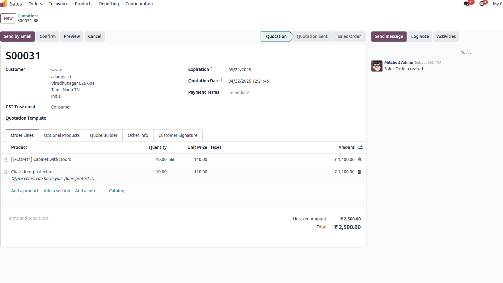
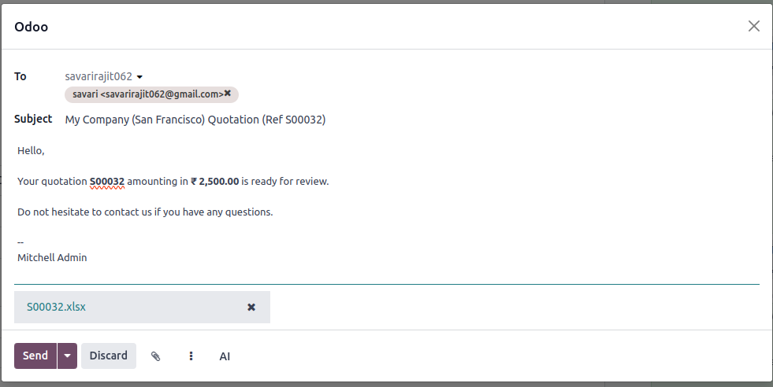
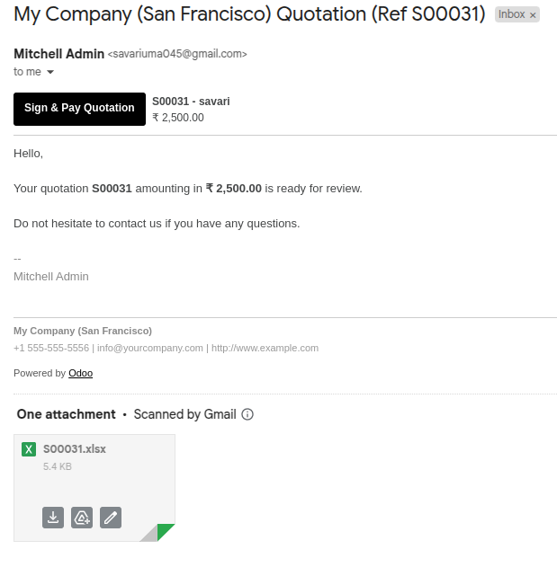
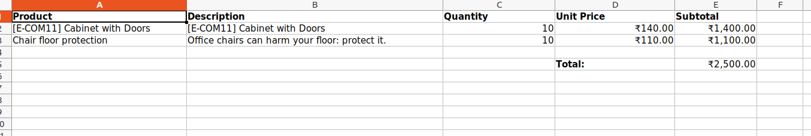

📝 Module Overview: Send Sale Quotation as Excel via Email
This module is designed to simplify the quotation process by allowing salespersons to generate and send sale quotations in
Excel format via email—without the need to frequently log into the Odoo Sales app.
🚀 Why Use This Module?
- Reduces time spent navigating the Odoo Sales interface
- Makes quotation handling more flexible and email-friendly
- Enhances customer communication with a clean and editable Excel format
✅ Key Benefits
- 📧Send Quotations in Excel Format
Salespersons can send detailed sale quotations as Excel attachments directly via email.
- 🔁Easily Update Quotations
If a customer requests changes, the salesperson can edit the Excel file and resend it without logging in to Odoo.
- 🕒Login Only When Needed
Salespersons only need to log in to Odoo once the customer confirms the quotation. At that point, they can update and confirm the quotation in the system.
- 💼Streamlined Workflow
Reduces the need for repeated access to the Odoo Sales app, improving productivity and customer communication.
📌 Use Case Scenario
- The salesperson sends a quotation via email in Excel format.
- The customer reviews and suggests changes via email.
- The salesperson edits the Excel file and resends it without opening Odoo.
- Once the customer confirms the quotation via email, the salesperson logs into Odoo, updates the quotation, and confirms it.
📸 Screenshots
Create the Sale Quotation In the Sale Module

Open the Send Quotation Wizard Attach the Excel

Customer Mail Inbox

The Excel File
